01The idea
An annual series of a vegetation index is noisy: a dry year, a haze the composite missed, a field ploughed in one year and not the next. LandTrendr (Kennedy et al. 2010) looks for the few vertices, the years where the trajectory changes direction, joined by straight segments, that explain the series best with as few breaks as possible. A segment that goes down is a loss (a clearing, a fire, a harvest); one that goes up is a gain (regrowth, a plantation). From the segments, Janus maps one event per pixel: its year of detection, magnitude, duration, the values before and after, its rate and how it stands out from the noise.
- Vertex
- A year where the fitted trajectory changes slope.
- Segment
- The straight line between two vertices.
- Event
- A segment in the direction of interest (loss or gain), and the one mapped when there are several (the greatest, newest, fastest...).
- Magnitude
- How far the index moved over the event, in the units of the series.
- DSNR
- The magnitude divided by the fit's error: how clearly the event stands above the year-to-year noise.
LandTrendr needs one date per year (at least six), each a composite of the same season, of an index that moves the same way for the change you want: NBR or NDVI drop when a forest is cleared.
02The example
Forty years of NDVI (× 10000), one composite a year from 1985 to 2024, over a circle of about 50 km in central Rondônia, Brazil: a forest frontier opened along the roads, cleared mostly between 2000 and 2005, with some of it grown back since.

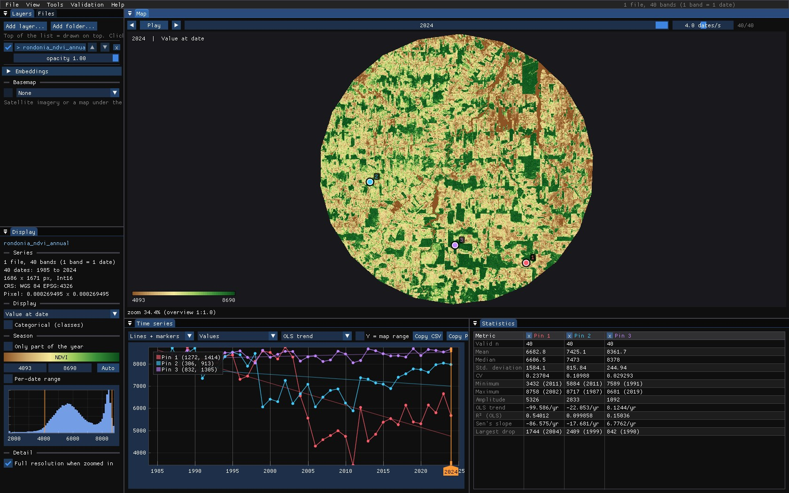
The stack is one GeoTIFF with a band per year, named yr1985 to yr2024: Janus reads the years from the band names. Outside the circle the file holds 0, so it is opened through a VRT that declares 0 as no data; otherwise the edges would be read as an NDVI of 0.
03Opening the tool
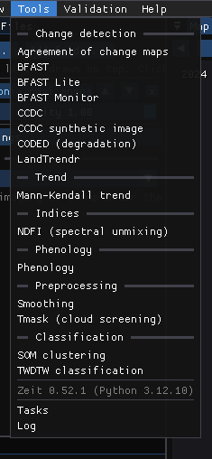
Tools → LandTrendr opens its window. The tools come from Zeit, whose methods are part of Janus: nothing to install. A tool that does not fit the series open is disabled, with the reason (LandTrendr on a monthly series: it needs one date per year).
04On the chart
With Fit the cursor, pins and ROI series ticked, LandTrendr runs on every exact series the chart shows, as you move the mouse or drop pins, and draws its segments and vertices over them. Its numbers go to the Statistics table.

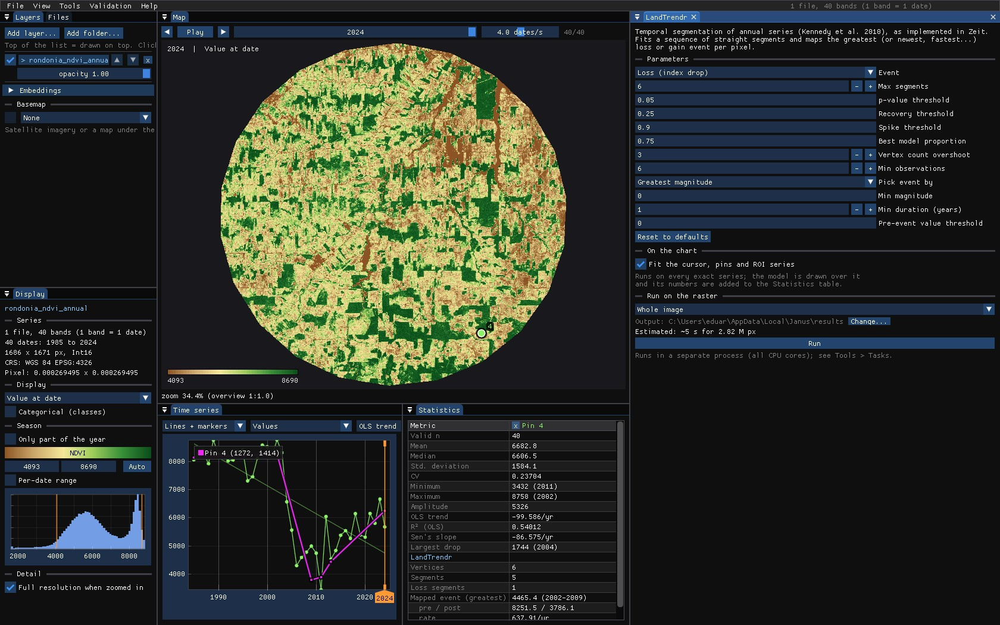

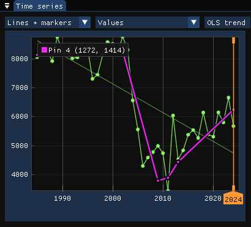

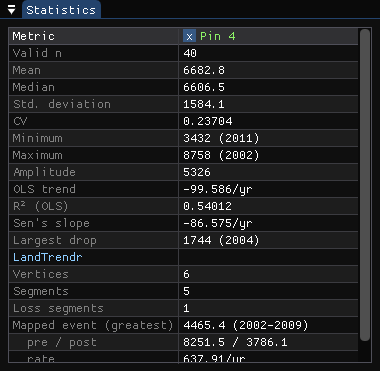
The table reads: 6 vertices and 5 segments, of which 1 is a loss; the event a map would show is the greatest loss, 4465.4 from 2002 to 2009, from 8251.5 to 3786.1. The other segments are the noise around the pasture and its slow gain, smaller than the loss.
Fit first, run later
The chart is where parameters are chosen: drop pins on the cases you know (a clearing, a regrowth, a forest that should stay untouched, a field) and change the parameters until each reads as it should. The run on the image uses exactly what the window shows.
05The parameters
Loss or gain
Event sets the direction of interest: Loss for a drop of the index, Gain for a rise. It orients the segmentation and which segments become events. On the pixel cleared in 1999 that grew back, looking for gains maps the regrowth:

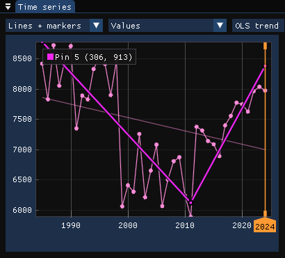

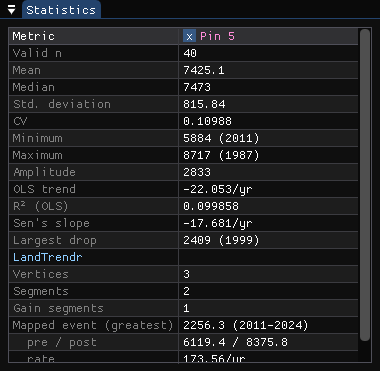
How many segments
Max segments limits how detailed the trajectory can be. Too few and real events are lost: with two segments at most, the cleared pixel becomes one long decline from 1985 to 2024, with no year of clearing at all.

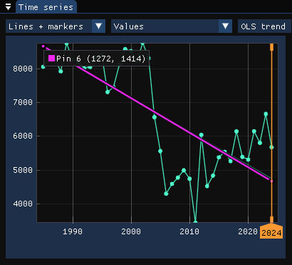
All of them
| Parameter | Default | What it does |
|---|---|---|
| Event | loss | Direction of interest: a drop or a rise of the index. |
| Max segments | 6 | The most segments the trajectory may have. |
| p-value threshold | 0.05 | Models with a worse p-value are rejected (simpler ones are tried). |
| Recovery threshold | 0.25 | The fastest recovery allowed, per year (1 / years): faster rises are taken as noise, not as regrowth. |
| Spike threshold | 0.9 | Dampens single-year spikes (a missed cloud); 1 keeps them. |
| Best model proportion | 0.75 | Prefers the model with the most vertices whose p-value is close enough to the best one. |
| Vertex count overshoot | 3 | Extra candidate vertices found before the weakest are pruned. |
| Min observations | 6 | Pixels with fewer valid years are not fitted. |
| Pick event by | greatest | Which event a pixel's maps show when it has several: the greatest, newest, fastest, longest, or the clearest (DSNR). |
| Min magnitude | 0 | Events smaller than this are ignored, in the units of the series. |
| Min duration | 1 | Events shorter than this (years) are ignored. |
| Pre-event value threshold | 0 | Loss: only events that start above this value (a forest); gain: below it. 0 is off. |
The first eight shape the segmentation; the last four only choose which event is mapped. Thresholds are in the units of the series: here NDVI × 10000, so a minimum magnitude of 2500 is a drop of 0.25 NDVI.
06Running it on the image
Under Run on the raster, choose the scope: the Whole image, the Visible area of the map, or the ROI. Janus estimates the run time from a sample of the series (here about 6 s for 2.8 million pixels). Run starts the run in the background on every core; its progress is in Tools → Tasks, and the map stays usable meanwhile.
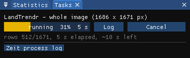
For the map, only real clearings should count: the run used a minimum magnitude of 2500 (0.25 NDVI) and a pre-event value of 7500 (the loss has to start in forest). Without them every pixel gets some loss, if only a dry year in the pasture.
The outputs are GeoTIFFs (in %LOCALAPPDATA%\Janus\results by default, next to the run's job.json and job.log), opened over the map as layers of their own in the Layers panel (hide the series and the panel under the map shows every map's value at the cursor and the pins, the histogram and the area of each year). Pixels without an event are transparent.
07The maps

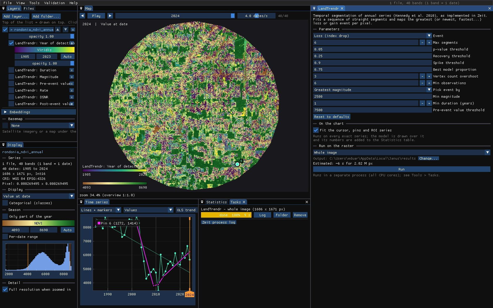
Each output is a layer with its own colour scale and range, which you can hide, reorder, export as GeoTIFF or compare with a swipe:
| Map | Meaning |
|---|---|
| Year of detection | The year the mapped event starts. |
| Magnitude | How far the index moved over it. |
| Duration | Its length in years: a clearing is 1–2, a slow decline many. |
| Pre-event / post-event value | The index at the start and at the end of the event. |
| Rate | Magnitude per year. |
| DSNR | Magnitude over the fit's error: low values are events barely above the noise. |

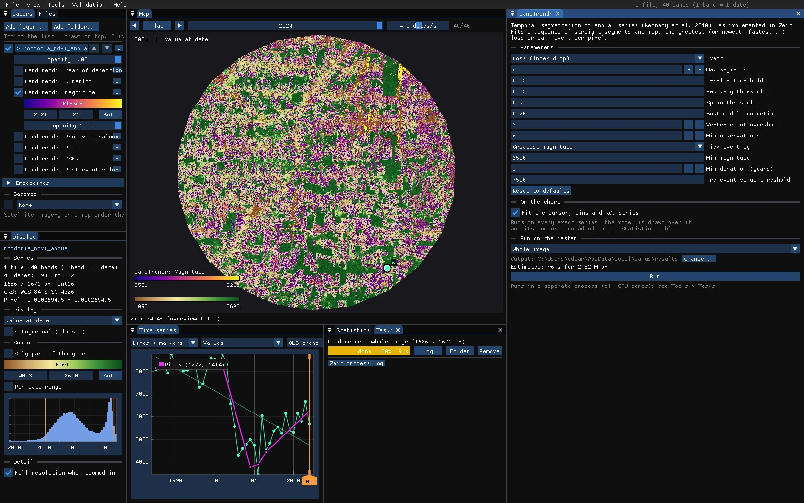
Hover the map with a result on top: the chart still shows the pixel's series and its fit, so every colour can be checked against the trajectory behind it.
08Recovery
The maps above say when a forest was lost. Tools → Recovery (LandTrendr) asks what came after: it segments each series as LandTrendr does, takes the greatest loss as the disturbance, and measures the fitted trajectory after its lowest point, the trough. Measured on the fit, not on the yearly values, a dry year or a missed cloud does not end a recovery.
- Pre-disturbance value
- The mean of the years just before the disturbance (2 by default).
- Y2R
- Years to recovery: from the trough until the fit first gets back to 80% of the pre-disturbance value (White et al. 2017). 0 when it never fell below that; no value when it has not got back by the last year.
- ARI
- Absolute recovery: how much the fit rose from the trough after 5 years (the horizon), in the units of the series.
- RRI
- Relative recovery: ARI over the magnitude of the loss. 1 is all of it back.
- R80P
- The value after 5 years over 80% of the pre-disturbance value. 1 or more is recovered.
- YrYr
- Year-on-year recovery: the rise from the trough to year 5, per year.
The value after the horizon is the best of the fitted values of years 4 and 5 after the trough (Frazier et al. 2018). On the chart, the tool draws the LandTrendr fit, the recovery level as a dashed line from the trough, and a vertical line at the year the pixel recovered.
Two pixels
The tool was set as the LandTrendr run of section 06: a minimum magnitude of 2500 and a pre-event value of 7500, so that only clearings of forest count as disturbances. The forest cleared in 1998–1999 that grew back:

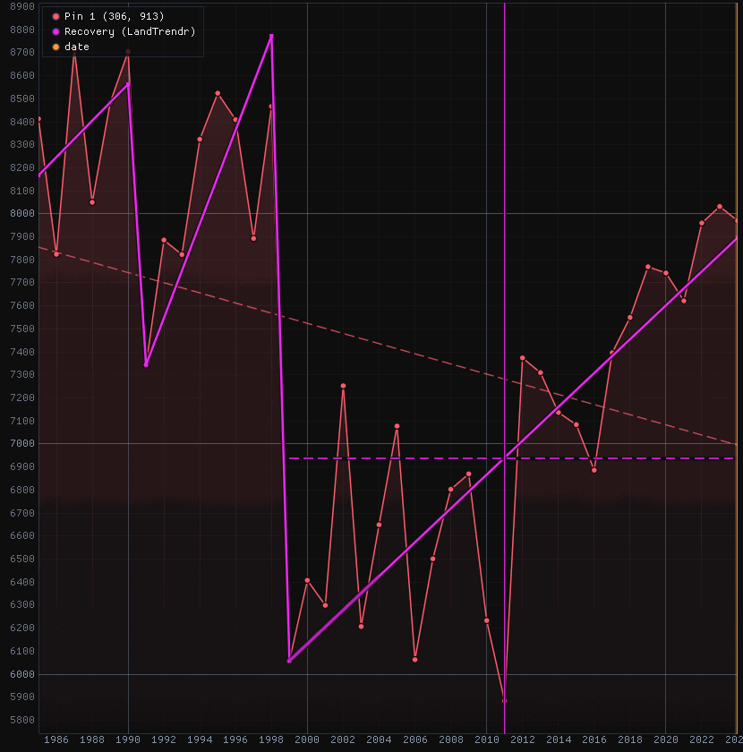

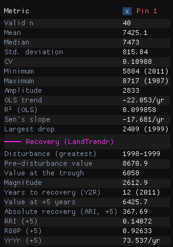
Before the clearing the fit stood at 8670.9 (its mean over 1997 and 1998); the trough is 6058 in 1999, a loss of 2612.9. Five years later the fit had risen by 367.7 (ARI): 14% of the loss (RRI), 93% of the way to the recovery level of 6936.7 (R80P), 73.5 a year (YrYr). It got there in 2011: Y2R = 12.
The forest cleared from 2002 to 2009 and kept as pasture:

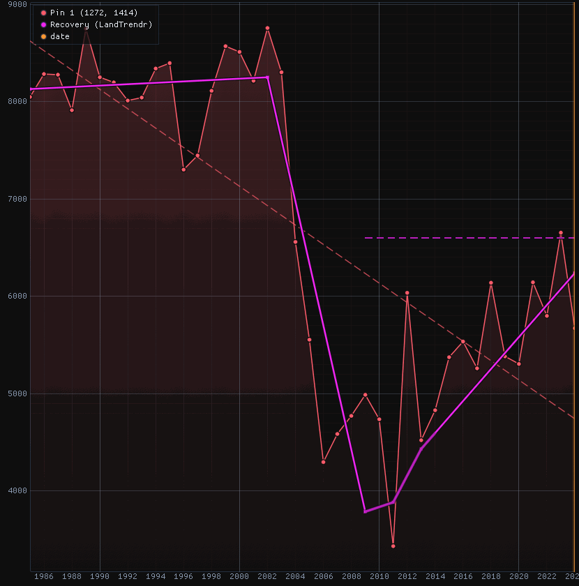

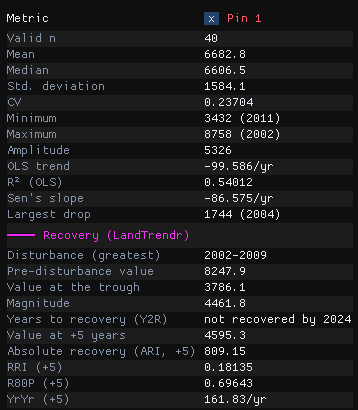
Here the loss is 4461.8, and the pasture's slow rise gives a larger ARI (809.2) and YrYr (161.8 a year) than the regrowth's, but only 18% of the loss (RRI) and 70% of the recovery level after five years (R80P). The level, 6598.3, is never reached: the pixel has no Y2R. Read the metrics together: a fast early rise is not a forest coming back.
The parameters
The tool has LandTrendr's parameters (section 05), which find the disturbance, and four of its own:
| Parameter | Default | What it does |
|---|---|---|
| Horizon (years) | 5 | Years after the trough at which ARI, RRI, R80P and YrYr are measured. |
| Recovered at (fraction) | 0.8 | The fraction a pixel must get back to: 0.8 for White et al.'s Y2R and R80P. |
| Recovery level | pre-disturbance value | Fraction of the pre-disturbance value, for an index that is positive and drops (NDVI, NBR); or Fraction of the loss regained, for any index and either direction (gains need this one). |
| Pre-disturbance years | 2 | Years averaged for the pre-disturbance value, up to the start of the disturbance. |
The maps
Run on the whole image (about 10 seconds for its 2.8 million pixels), the tool writes eight maps: years to recovery, R80P, RRI, ARI, YrYr, and the disturbance's magnitude, pre-disturbance value and year. Of the image's 2.8 million pixels, 22.7% have a disturbance and 7.6% a years to recovery: the others had not got back to the level by 2024.

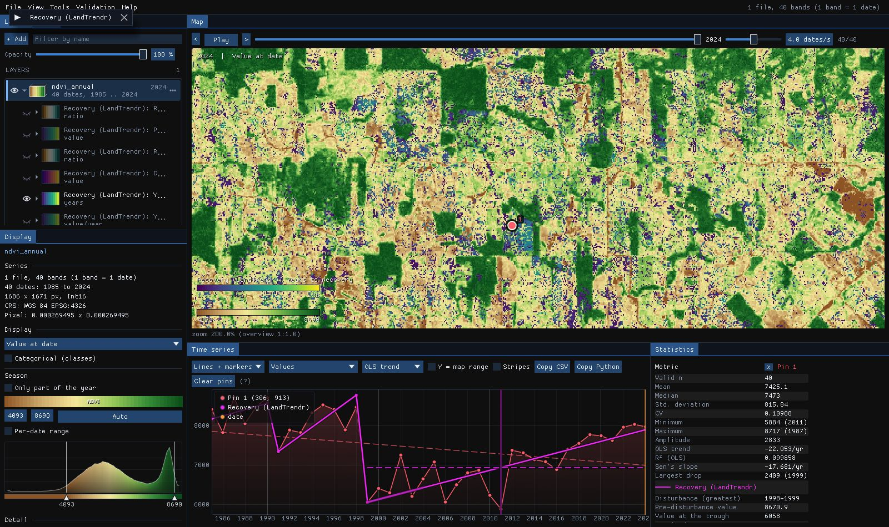
The scattered pixels of 1 to 5 years in the pastures are cases to check on the chart before believing: a loss barely past the thresholds whose fit gets back to 80% within the year-to-year noise. A higher Min magnitude, or the Pick event by and Min duration filters, leave them out.
Against the original
Zeit's recovery metrics agree with the R package RecoverMetricsR to float32's precision (a relative difference of 6e-8). On 1000 × 1000 pixels of 21 years, RecoverMetricsR takes 52.4 s and Zeit 98 ms on one thread, 535 times faster.
09What next
- Validate it. The year of detection is a map of events: the Validation guide stratifies it, draws a sample and estimates its accuracy and the area of loss by year, with confidence intervals.
- Compare it. Tools → Agreement of change maps takes several maps of dates (LandTrendr, CCDC, BFAST, CODED) and maps where and when they agree.
- Export it. Right click a result in the Layers panel to save it as GeoTIFF, or save the map as a PNG figure.
- Script it. The same algorithm is
zeit.landtrendrandzeit.extract_eventsin Python.
10References
- Kennedy, R. E., Yang, Z., Cohen, W. B. (2010). Detecting trends in forest disturbance and recovery using yearly Landsat time series: 1. LandTrendr — Temporal segmentation algorithms. Remote Sensing of Environment, 114, 2897–2910.
- Kennedy, R. E. et al. (2018). Implementation of the LandTrendr algorithm on Google Earth Engine. Remote Sensing, 10(5), 691.
- Kennedy, R. E., Yang, Z., Cohen, W. B., Pfaff, E., Braaten, J., Nelson, P. (2012). Spatial and temporal patterns of forest disturbance and regrowth within the area of the Northwest Forest Plan. Remote Sensing of Environment, 122, 117–133.
- White, J. C., Wulder, M. A., Hermosilla, T., Coops, N. C., Hobart, G. W. (2017). A nationwide annual characterization of 25 years of forest disturbance and recovery for Canada using Landsat time series. Remote Sensing of Environment, 194, 303–321.
- Frazier, R. J., Coops, N. C., Wulder, M. A., Hermosilla, T., White, J. C. (2018). Analyzing spatial and temporal variability in short-term rates of post-fire vegetation return from Landsat time series. Remote Sensing of Environment, 205, 32–45.
- Zeit: the change detection library behind the tools of Janus.